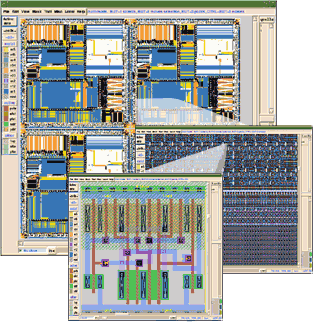
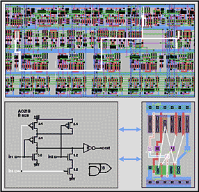

| Micro Magic Tools Overview |
| • SUE Design Manager |
| • DataPath Compiler |
| • MAX Layout Editor and MAX-LS Layout System |
| • MegaCell Compiler |
|
|
D A T A S H E E T
|
| Figure 1. MAX Layout Editor Environment—view and edit the largest designs. |
 |
All this means that layout design is now easy and very fast, and cells are DRC clean. Automatic connectivity tracing from any layout source easily shows how elements are connected. No extraction is required.
In recent benchmarks, the MAX layout editor has proven to be 50 times faster in loading, displaying and editing physical layout data. It can handle the largest IC design databases with up to billions of devices.
This tool is ideal for viewing and editing the results of place and route tools. When loading an entire chip before tapeout, the MAX layout editor accelerates the previously slow and torturous process of reviewing the entire design, the results of LVS and DRC checks, and any last-minute changes.
The MAX layout editor is adept at all aspects of physical design, from creating cells for a library, to interacting with place-and-route activities at the block-level, to assembling an entire chip. This tool has the power to handle the largest of chips, and it is easy to use. Designers will enjoy the view into the physical world that it offers.
View and Edit Full Chips Down to Full-custom Cells
The MAX layout editor is for physical design teams who need to view, manipulate, and understand what is going on with their place-and-route process.
It is also useful for integration teams who need to efficiently manipulate large amounts of data during assembly and perform back-end analyses.
This tool has a number of features that make it the best choice for doing IC layout for high-performance, fast time-to-market designs.
MAX-LS Layout System—The Tool for Layout Designers
The MAX-LS layout system is a Micro Magic tool that incorporates our best tools for IC physical layout design of leaf cells, large blocks, and complete SoC products, and
adds schematic-driven layout.
This tool has all the capabilities of the standard MAX layout editor, plus it has a schematic viewer and layout generator.
| Figure 2. Schematic-driven layout generation, cross-probing between layout and schematic, interactive connectivity tracing and real-time DRC. |
 |
The MAX-LS layout system is ideal for full custom IC layout designers who are working on the largest, fastest, state-of-the-art digital or analog IC designs. It provides a complete environment to receive information from design engineering and to contain all technology information from a specific foundry. The physical layout process goes faster when using the MAX-LS layout system.
This tool provides all the capabilities necessary for layout designers to accomplish their mission.
It features true schematic-driven layout design, offering the ability to interactively generate a layout that is DRC- and LVS-correct with devices automatically sized.
Based on a schematic, the MAX-LS layout system can generate every transistor, show flylines for connecting them, and cross-probe between schematic and layout. This gives the layout designer complete control, yet assures rapid physical design development.
Both the MAX layout editor and the MAX-LS layout system tools have complete programming interfaces using Tcl/Tk and a well-documented API. Whether you need full-custom layout, cell-assembly, chip-assembly, or the ability to write your own generators, these are the tools to choose for your physical design needs.
Features:
{kind=link}
{kind=link}